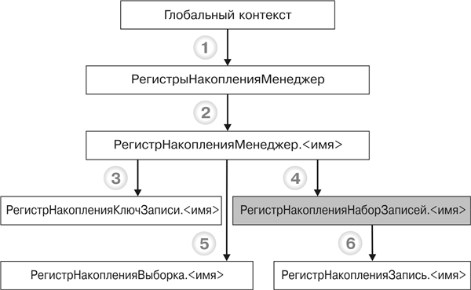

1.2.11.1. Объекты встроенного языка для работы с регистрами накопленияНа следующей схеме изображено взаимодействие объектов встроенного языка для работы с регистрами накопления (рис. 29.19).

Рис. 29.19. Объекты встроенного языка для работы с регистрами накопления
ПРИМЕЧАНИЕ
Заливкой выделен объект манипулирования данными. Метод объекта, от которого идет стрелка, приводится в листинге под соответствующей цифрой, а объект, к которому идет стрелка, – это тип объекта, возвращаемого методом.
Узнай больше!
Про основные виды объектов встроенного языка можно прочитать в главе «Объекты встроенного языка для работы с прикладными данными».
РегистрНакопленияЗапись.<имя>. Используется для доступа к записи регистра накопления. Объект не создается непосредственно, а предоставляется другими объектами, отвечающими за регистр накопления. Например, данный объект представляет записи регистра в наборе записей.
РегистрНакопленияКлючЗаписи.<имя>. Представляет собой набор значений, однозначно идентифицирующих запись регистра. Объект используется в тех случаях, когда необходимо сослаться на определенную запись. Например, он выступает в качестве значения свойства ТекущаяСтрока табличного поля, отображающего список записей регистра.
Ниже приведены примеры использования объектов встроенного языка для работы с регистрами сведений (листинг 29.9).
Листинг 29.9. Примеры использования объектов
|